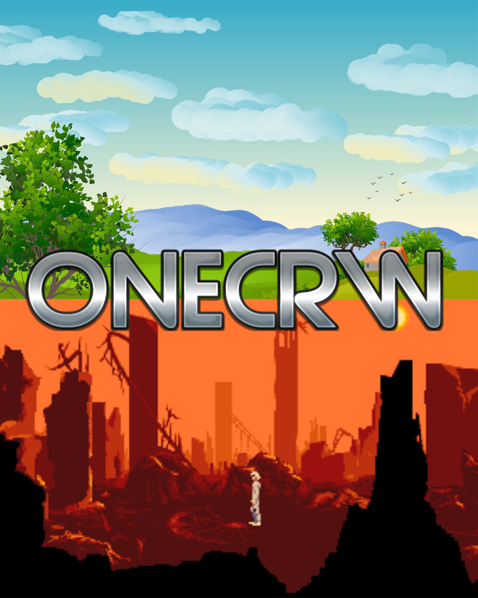

Jullie Cach/August 2,2021
On Friday we were given a task to create ideas of a game for a specific topic we wanted to bring
importance to. In my group, we thought of a game based on the topic of climate change and how it
affects the environment. The game would let players experience the effects of climate change in
different places of the world and how their actions matter. We hoped through this game it would
raise awareness to the people and for them to take accountability of their own actions and educate
others around them. We named our game OneCRW and even created a poster for it.

How the game works and its features:
Jullie Cach/July 27, 2021
Below is a tutorial about how floats and clears work. In the tutorial it shows examples of
how to change the image direction and have the text wrap around the image. Also how to shift
text around either below or side to side. Through color blocks, they show more into depth
about how float works when shifted to the right or left and about clear. I chose this
video because it sounded very intriguing to me but as well because after watching it,
it gave me a basic understanding about different layouts that can be applied to my website that can be used in the near future!
Jullie Cach/July 22, 2021
Thinking more in depth about machine learning and my encounters with it is very interesting. For anyone who has spotify, you may notice that spotify always recommends new music based on the artists and songs you have listened to. Either it pops up on your screen saying “because you listen to these artists, here are some songs for you.” Or on your playlists, at the bottom, it recommends songs to you based on that specific playlist or overall to what you listen to most. I don’t mind the suggestions because sometimes I do like the songs but usually when I’m recommended the songs, they are not always my cup of tea. But usually all my recommendations only stick to one genre. For example if I only listened to jazz, it would only recommend jazz music. Because of this it’s sometimes hard to venture off to different genres because I don’t know where to start. There aren’t really as many recommendations towards other genres as I would like. I would say that’s just one down side about it because it assumes that I only listen to one genre. But inorder to fix that, I would have to listen to other songs from genres I want for it to start recommending more songs besides the ones I usually listen to.
Jullie Cach/July 21, 2021
After learning more about cryptography, it felt like a whole new world opened for me. I thought to myself if I kept learning more about cryptography, just like about all the amazing women we read and heard about, I can possibly make a difference. Not to mention it would be a nice way to communicate with others when I don’t want anyone to know what I am talking about.
Cryptography can be used in a positive and negative ways. For example, I want to send a secret message without anyone knowing to my friend so I encrypt it and send the message to her. I want to tell her that if she wants to buy ice cream from the person on the corner of the street from where she lives, she shouldn’t because the person doesn’t wash their hands and sometimes there are things found in the ice cream. In this case I would be using cryptography in a positive way because I’m giving her a heads up on the person for her not to get sick. Just like in times of war, cryptography can be used to let the people know about something that can cause damage and with the heads up, they can help prevent anything bad from happening. On the contrary, if I told my friend that the ice cream right on her corner is amazing and should try it knowing these bad things, I would be using cryptography in a negative way as I’m giving false info and leading my friend to getting sick. Similarly during times of war, secret messages can be sent but can give false information and lead to damage being done.